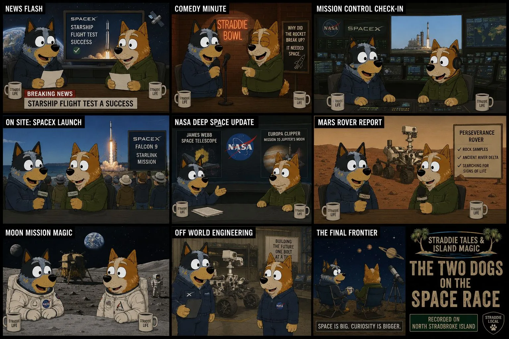

Showrunner runsheet
Assemble a full show from prepared pieces, or freestyle with planned segues.
Select the components you need, tune the rough pacing, then export a Markdown runsheet and use the preview as the working showrunner page. The show length is experimental for now.

Runsheet
Show setup
Save to runsheets/
Autosaves in this browser.